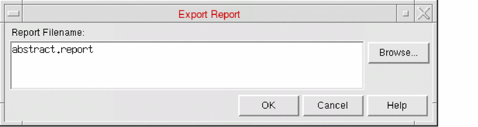

Exporting a Report in Abstract Generator
The report function outputs a summary of the cells in your library. It contains statistical information about the whole library, such as the number of cells by type and the number of cells with errors or warnings, and more detailed information about each of the individual cells.
- General information about the tool version
- Date and time the report was generated
- Details of the number of errors and warnings generated during the current session
- Total number of cells by type
- Number of cells with errors or warnings
- Number of cells with valid logical views but no layout views
-
Choose File – Export – Report to start this command.
This displays the Export Report form.
 - In Report Filename, specify a path and name for the file to be exported, or use the Browse function to help you specify the location.
- Click OK to export the report to the specified file location.
Related Topics
Return to top